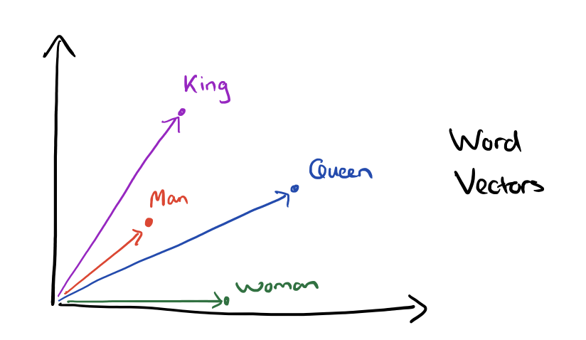

# library(readxl)
library(tidyverse)
library(quanteda)
library(quanteda.textstats)
library(quanteda.textplots)
library(RColorBrewer)
library(topicmodels)
# library(ggwordcloud)
library(wordcloud)7 Vectorisation
7.1 Introduction
C’est sans doute l’idée la plus novatrice que l’approche computationnelle du langage a apporté ces 10 dernières années. Le modèle word2vec de Mikolov(2013) en est une première version, d’autres ont apporté des amélioration comme le modèle Glove.
L’idée fondamentale est qu’on peut représenter des mots dans un espace de grande dimension par des vecteurs. Ce qui importe c’est de conserver la relation entre mots dans cet espace. Deux mots très corrélés, au sens de leur cooccurences, doivent l’être avec la même intensité dans cet espace. Admettant que le cosinus de l’angle entre deux vecteurs est équivalent à leur corrélation, on comprend aisément que la vectorisation consiste à identifier un jeu de coordonnées, les paramètres des vecteurs mots, en connaissant les angles qu’is forment entre eux.
Pour estimer les coordonnée des vecteurs deux méthodes peuvent être employée simultanéement.
Les mots observés, dont on peut prédire le contexte (Skip-gram)
Les éléments du contexte observés, dont on peut prédire le mot (CBOW)
L’idée de plongement lexical tient alors dans cette dynamique double d’identification et de rattachament des éléments textuels ensembles, selon différentes méthodes de vraisemblance/mesure.

Le caractère remarquable de la méthode c’est qu’il est posible d’opérer des opérations algébriques, l’exemple canonique est celui de : reine = Roi+Homme - Femme
 Pour la mise en oeuvre on emploie le package WordVectors de BenJamin Schmidt.
7.2 Les données
On repart du vocabulaire préparé au chapitre 6. On lemmatise, on ne garde que les mots signifiants. On créera les n-gramms directement dans la vectorisation. On sauvegarde le tout en format .txt pour pouvoir ensuite l’injecter dans le modèle.
data <- read_csv("data/data_trustpilot_oiseaux.csv")Rows: 4388 Columns: 7
── Column specification ────────────────────────────────────────────────────────
Delimiter: ","
chr (4): auteur, date, month, comments
dbl (3): id, year, note
ℹ Use `spec()` to retrieve the full column specification for this data.
ℹ Specify the column types or set `show_col_types = FALSE` to quiet this message.data<-data%>%mutate(text_id=paste0("text_", row_number(data$id)))
ann_token<-read_rds("data/annotation_oiseaux.rds")
data<-ann_token%>%
filter(upos=="NOUN"|upos=="VERB"|upos=="ADJ"|upos=="ADV")%>%
group_by(doc_id)%>%
summarise(text=paste(lemma,collapse = " "))%>%
inner_join(data, join_by("doc_id"=="id"))
corpus_new<-corpus(data, text_field = "text")
toks<-tokens(corpus_new)%>%
tokens_replace(c("produire", "conformer","colir", "tre", "livrer", "n"), c("produit", "conforme","colis", "très", "livraison", "ne"))%>%
tokens_remove(c(".",","))
foo1<-data.frame(
id = seq_along(toks),
text = sapply(toks, paste, collapse = " "),
row.names = NULL
)
#on génère le fichier de ces textes "purifiés"
write.table(foo1, file="data/textes.txt")7.3 Vectoriser le texte
On commence par préparer le texte pour l’algorithme, avec le package ‘wordVectors’.
# install.packages("remotes")
# remotes::install_github("bmschmidt/wordVectors")
library(wordVectors)
#Nettoyage des tweets et identification des n-grammes en vue d'entraîner le modèle
prep_word2vec(origin="data/textes.txt",destination="data/textes_vec.txt",lowercase=T,bundle_ngrams=3)Beginning tokenization to text file at data/textes_vec.txtPrepping data/textes.txtStarting training using file data/textes_vec.txt
Vocab size (unigrams + bigrams): 21443
Words in train file: 50975
Starting training using file data/textes_vec.txt_
Words processed: 100K Vocab size: 40K
Vocab size (unigrams + bigrams): 21490
Words in train file: 101482On entraîne ensuite le modèle.
#Création et entraînement du modèle vectoriel
model = train_word2vec("data/textes_vec.txt",
"data/textes.bin",
vectors=200,threads=3,
window=5,
iter=10,negative_samples=0,
force=TRUE,
min_count=30)Starting training using file D:/NLP_ED/data/textes_vec.txt
Vocab size: 192
Words in train file: 29198Filename ends with .bin, so reading in binary formatReading a word2vec binary file of 192 rows and 200 columns
|
| | 0%
|
| | 1%
|
|= | 1%
|
|= | 2%
|
|== | 3%
|
|=== | 4%
|
|=== | 5%
|
|==== | 5%
|
|==== | 6%
|
|===== | 7%
|
|===== | 8%
|
|====== | 8%
|
|====== | 9%
|
|======= | 9%
|
|======= | 10%
|
|======== | 11%
|
|======== | 12%
|
|========= | 12%
|
|========= | 13%
|
|========= | 14%
|
|========== | 14%
|
|========== | 15%
|
|=========== | 15%
|
|=========== | 16%
|
|============ | 17%
|
|============ | 18%
|
|============= | 18%
|
|============= | 19%
|
|============== | 20%
|
|=============== | 21%
|
|=============== | 22%
|
|================ | 22%
|
|================ | 23%
|
|================= | 24%
|
|================== | 25%
|
|================== | 26%
|
|=================== | 27%
|
|=================== | 28%
|
|==================== | 28%
|
|==================== | 29%
|
|===================== | 30%
|
|====================== | 31%
|
|====================== | 32%
|
|======================= | 32%
|
|======================= | 33%
|
|======================== | 34%
|
|======================== | 35%
|
|========================= | 35%
|
|========================= | 36%
|
|========================== | 36%
|
|========================== | 37%
|
|========================== | 38%
|
|=========================== | 38%
|
|=========================== | 39%
|
|============================ | 40%
|
|============================ | 41%
|
|============================= | 41%
|
|============================= | 42%
|
|============================== | 42%
|
|============================== | 43%
|
|=============================== | 44%
|
|=============================== | 45%
|
|================================ | 45%
|
|================================ | 46%
|
|================================= | 47%
|
|================================== | 48%
|
|================================== | 49%
|
|=================================== | 49%
|
|=================================== | 50%
|
|=================================== | 51%
|
|==================================== | 51%
|
|==================================== | 52%
|
|===================================== | 53%
|
|====================================== | 54%
|
|====================================== | 55%
|
|======================================= | 55%
|
|======================================= | 56%
|
|======================================== | 57%
|
|======================================== | 58%
|
|========================================= | 58%
|
|========================================= | 59%
|
|========================================== | 59%
|
|========================================== | 60%
|
|=========================================== | 61%
|
|=========================================== | 62%
|
|============================================ | 62%
|
|============================================ | 63%
|
|============================================ | 64%
|
|============================================= | 64%
|
|============================================= | 65%
|
|============================================== | 65%
|
|============================================== | 66%
|
|=============================================== | 67%
|
|=============================================== | 68%
|
|================================================ | 68%
|
|================================================ | 69%
|
|================================================= | 70%
|
|================================================== | 71%
|
|================================================== | 72%
|
|=================================================== | 72%
|
|=================================================== | 73%
|
|==================================================== | 74%
|
|==================================================== | 75%
|
|===================================================== | 76%
|
|====================================================== | 77%
|
|====================================================== | 78%
|
|======================================================= | 78%
|
|======================================================= | 79%
|
|======================================================== | 80%
|
|========================================================= | 81%
|
|========================================================= | 82%
|
|========================================================== | 82%
|
|========================================================== | 83%
|
|=========================================================== | 84%
|
|=========================================================== | 85%
|
|============================================================ | 85%
|
|============================================================ | 86%
|
|============================================================= | 86%
|
|============================================================= | 87%
|
|============================================================= | 88%
|
|============================================================== | 88%
|
|============================================================== | 89%
|
|=============================================================== | 90%
|
|=============================================================== | 91%
|
|================================================================ | 91%
|
|================================================================ | 92%
|
|================================================================= | 92%
|
|================================================================= | 93%
|
|================================================================== | 94%
|
|================================================================== | 95%
|
|=================================================================== | 95%
|
|=================================================================== | 96%
|
|==================================================================== | 97%
|
|===================================================================== | 98%
|
|===================================================================== | 99%
|
|======================================================================| 99%
|
|======================================================================| 100%Nous avons un vocabulaire de 192 pour 29 198 mots dans le fichier d’entraînement. Il se présente sous la forme d’un tableau de 192 lignes et 200 colonnes.
7.4 Exploiter les résultats
Pour exploiter cette représentation, une première manière de faire est de rechercher dans le corpus les termes les plus associés à un terme cible. Quel est son contexte le plus proche ? Des fonctions pratiques sont proposées dans le package. la principale closest_to qui permet de selectionner les termes les plus proches, en termes de cosinus, du vecteur cible.
Dans l’exemple suivant, on cherche à mieux saisir le concept de “livraison”. On examine les trentes termes les plus proches.
foo<-model %>%
closest_to(~"livraison",31)%>%
filter(word!="livraison")%>%#on choisit les 30 termes les plus proches, sauf livraison
rename(similarity=2)
ggplot(foo, aes(x=reorder(word,similarity),y=similarity))+
geom_point(col="black",size=3)+
coord_flip()+
ggtitle("N-grammes similaires à livraison")Exercice : répéter l’opération sur “perroquet”
Solution
foo<-model %>%
closest_to(~"perroquet",31)%>%
filter(word!="perroquet")%>%#on choisit les 30 termes les plus proches, sauf livraison
rename(similarity=2)
ggplot(foo, aes(x=reorder(word,similarity),y=similarity))+
geom_point(col="black",size=3)+
coord_flip()+
ggtitle("N-grammes similaires à perroquet")On peut affiner les concepts en faisant la somme de plusieurs mots.
foo<-model %>%
wordVectors::closest_to(~("perroquet"+"perruche"),32)%>%
filter(word!="perroquet"&word!="perruche")%>%#on choisit les 30 termes les plus proches, sauf livraison
rename(similarity=2)
ggplot(foo, aes(x=reorder(word,similarity),y=similarity))+
geom_point(col="black",size=3)+
coord_flip()+
ggtitle("N-grammes similaires à perroquet")Et on peut également soustraire des concepts les uns aux autres.
foo<-model %>%
wordVectors::closest_to(~("problème"-"livraison"),32)%>%
rename(similarity=2)
ggplot(foo, aes(x=reorder(word,similarity),y=similarity))+
geom_point(col="black",size=3)+
coord_flip()+
ggtitle("N-grammes similaires à problème, sans la livraison")7.5 Créer des groupes
On peut aussi créer des groupes. On verra la méthode classique de clustering et la méthode t-sne.
7.5.1 Clustering
q_words = c("livraison", "problème")
term_set = lapply(q_words,
function(q_word) {
nearest_words = model %>% closest_to(model[[q_word]],80)
nearest_words$word
}) %>% unlist
subset = model[[term_set,average=F]]
subset1<-as.data.frame(subset@.Data)
# un calcul de dissimilarité sur la base des cosinus
#la fonction habituel dist ne le permetpas
Matrix <- as.matrix(subset1)
sim <- Matrix / sqrt(rowSums(Matrix * Matrix))
sim <- sim %*% t(sim)
#on transforme en distance la similarité cosinus, celle ci varie de 0 à 2.
D_sim <- as.dist(1 - sim)
#un clustering hiérarchique avec 10 groupes
clus<-hclust(D_sim)
groupes<- cutree(clus,k=10)
library(ggdendro)
ggdendrogram(clus, rotate=TRUE ,type = "triangle")ddata <- dendro_data(clus, type = "triangle")
ggplot(segment(ddata)) +
geom_segment(aes(x = x, y = y, xend = xend, yend = yend)) +
coord_flip()+
geom_text(data = ddata$labels,
aes(x = x, y = y, label = label), size = 2, vjust = 0)7.5.2 t-sne
library(Rtsne)
library(RColorBrewer)
# run Rtsne with default parameters
set.seed(57)
rtsne_out <- Rtsne(as.matrix(subset), perplexity=25)
# plot the output of Rtsne
#jpeg("fig.jpg", width=2400, height=1800)
color.vec = c("#556270", "#4ECDC4", "#1B676B", "#FF6B6B", "#C44D58", "seagreen1", "seagreen4", "slateblue4", "firebrick", "Royalblue")
#des manip pour associer les groupe du clustering aux termes et à la leur coordonnée dans tsne.
groupes<-as.data.frame(groupes)
groupes$word<-rownames(groupes)
terms<-as.data.frame(rownames(subset))
terms$word<-terms[,1]
terms<-terms %>% left_join(groupes, by = "word")
plot(rtsne_out$Y, t='n')
#count(terms, clus)$n[2]
text(rtsne_out$Y, labels=rownames(subset),cex=0.8,col=color.vec[terms$groupes])